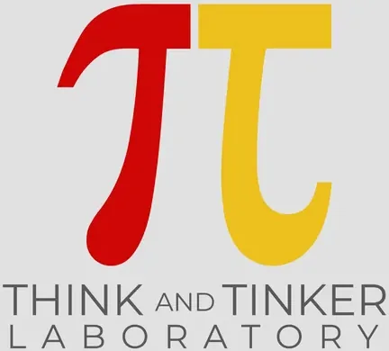

Think & Tinker Laboratory — Mapúá University
Mapúá University · NCR
The Think & Tinker Laboratory is Mapúá University's DOST-PCIEERD-accredited Technology Business Incubator and a member of the SCALE-NCR cluster of startup incubators in Metro Manila. The lab's name captures its dual purpose: think (ideate, conceptualize, design) and tinker (prototype, build, test, iterate) — a pairing that reflects its focus on engineering-driven and deep-tech startup development.
- Category
- Technology Business Incubator
- Host institution
- Mapúá University
- City
- Manila
- Region
- NCR
- Operating status
- Operating
About the Center
Housed within Mapúá University's Intramuros campus in Manila, the Think & Tinker Lab serves student entrepreneurs, early-stage startups, and research teams with a particular emphasis on technology ventures rooted in engineering, physical product development, and applied science. This focus is consistent with Mapúá's identity as one of the Philippines' premier engineering and technical universities, with ABET accreditation across its engineering programs and a long tradition of producing technical professionals.
As part of the DOST-PCIEERD TBI network under SCALE-NCR, the Think & Tinker Lab connects its incubatees to the national innovation system — including access to DOST funding mechanisms, technology commercialization pathways, and co-incubation linkages with other Metro Manila TBIs in the SCALE network.
Programs & Services
- Startup incubation for early-stage technology ventures, with depth in engineering, deep tech, hardware, and manufacturing-linked startups
- Prototyping and fabrication support leveraging Mapúá University's engineering laboratories and technical infrastructure
- Business development and mentoring from Mapúá faculty, alumni industry practitioners, and DOST-PCIEERD partner mentors
- IP and legal guidance for technology startups navigating patents, licensing, and commercialization of innovations
- Access to DOST-PCIEERD funding through the national TBI network, including technology commercialization grants and startup support programs
- SCALE-NCR ecosystem integration — connections to co-TBIs and collaborative incubation opportunities across Metro Manila
- Demo days and pitch events for pitch-ready startups within the SCALE-NCR and broader DOST-PCIEERD innovation network
Contact
Sources & references
- mb.com.ph/2022/03/08/mapua-university-dost-launch-think-and-tinker-laborato…
- bworldonline.com/sparkup/2022/01/28/426485/mapua-launches-fintech-focused-b…
- scalencr.ph
Details are drawn from public records and the sources above, July 2026.
Startupreneur Innovation Hub · synced from the Notion catalog (July 2026) · status: published.